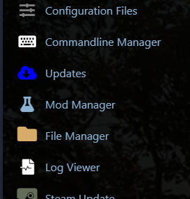
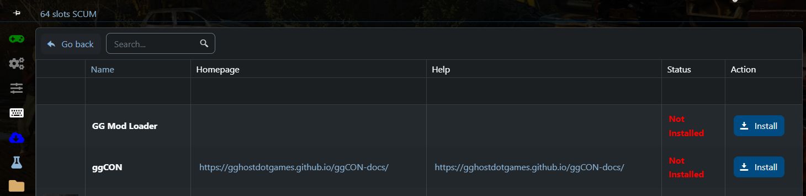
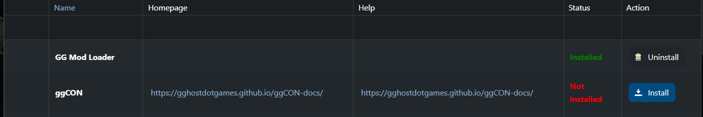
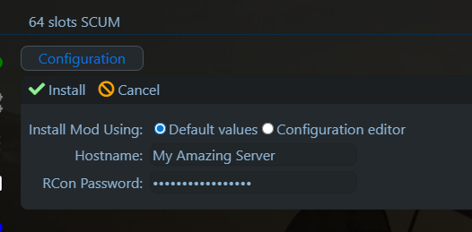
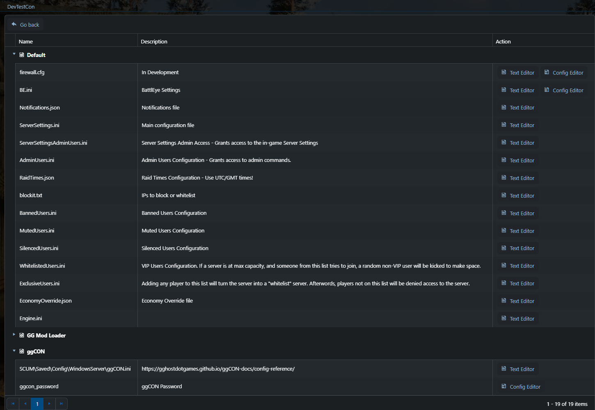
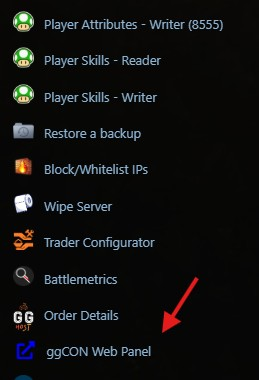

Getting Started¶
Requirements¶
Installation¶
1. Open Mod Manager¶
In your GG Host game panel, navigate to Mod Manager in the left sidebar.

2. Install GG Mod Loader¶
ggCON requires the GG Mod Loader to be installed first. Click Install next to GG Mod Loader and wait for it to complete.

Once GG Mod Loader shows "Installed", you can proceed to install ggCON.

3. Install ggCON¶
Click Install next to ggCON. You will be prompted to enter a strong RCon Password — this is the password you will use to access the web panel and API.

Click the green Install checkmark to confirm.
4. Set your password¶
After installation, go to Configuration Files in the left sidebar. Under the ggCON section at the bottom, click Config Editor next to ggcon_password.

Enter a strong password and save. This is the only configuration required — ggCON ships with sensible defaults and all other settings can be managed through the web panel once you're logged in.
5. Start your server¶
Start (or restart) your SCUM server. ggCON will activate automatically.
Access the web panel¶
The easiest way to open the panel is from the ggCON Web Panel shortcut in the left sidebar of your GG Host game panel — it logs you in automatically.

You can also access it directly at:
All settings — IP restrictions, command filtering, logging, Discord webhooks, and more — can be configured from the panel's Settings tab.
See Web Panel for full documentation.
Verify the mod is running¶
You can also test the health endpoint directly. Replace <server-ip> with your server's IP address and <port> with the HTTP port (default: 8081):
Expected response:
Make your first API call¶
Fetch the current player list:
Run an admin command:
curl -X POST \
-H "X-Password: yourpassword" \
-H "Content-Type: application/json" \
-d '{"command": "#ListPlayers"}' \
http://<server-ip>:<port>/command
Enabling RCON¶
To also accept RCON connections (compatible with mcrcon and similar clients), add to your ggCON.ini:
Two separate ports
ggCON uses two different ports: Port (HTTP, default 8081) for the web panel and API, and RconPort (default 27020) for RCON clients. Make sure you're using the right one for each use case.
See the RCON page for client setup instructions.